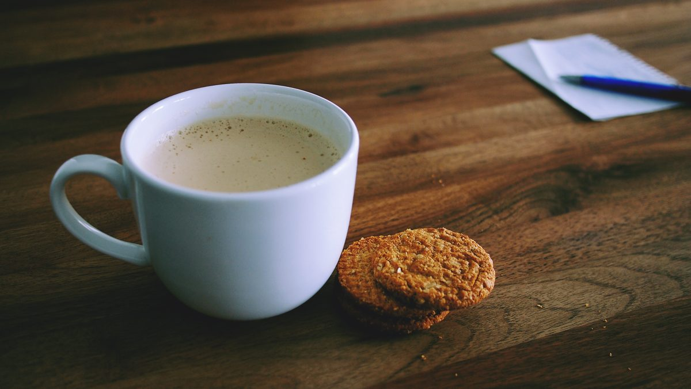
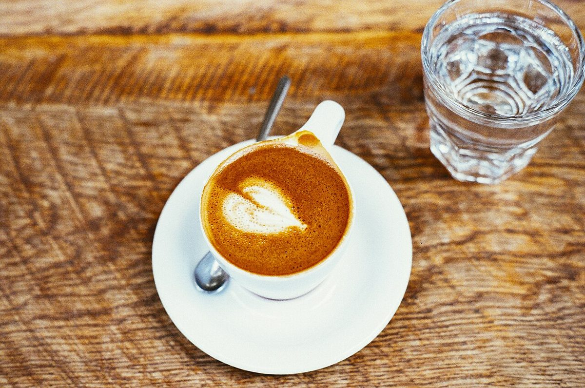

ABOUT
夫婦で始めた、生クリームのカフェ
BUBBLE CAFEは、宇部市松島町(宇部新川エリア)にあるカフェです。店主の森こず恵さんは会社員をしながら起業を考えていて、スイーツ好きのご主人・浩司さんの提案と後押しでカフェを開くことにしたと、地元メディアの取材記事で紹介されています。
「ラフにカジュアルに過ごしてもらえる店にしたい」、そして中心市街地に若い人が気軽に寄れる場所をつくりたい。そんな思いから、学生さんも立ち寄りやすいお店を目指していると伝えられています。
BUBBLE = 泡店名には3つの意味があると紹介されています。生クリームを「泡立てる」イメージ。
BUBBLE = バブル期バブル期のように盛り上がってほしいという願い。
BUBBLE = ブルご夫婦が好きな犬種フレンチブルドッグの「ブル」。
上記は2020年・2024年の地元メディア取材記事の内容です。現在の状況はお店にご確認ください。


MENU
生クリームをのせたドリンクが主役
取材記事では、生クリームをトッピングしたドリンクがお店の主力と紹介されています。以下は記事で紹介された内容で、現在のメニューではない場合があります。





写真はフリー素材のイメージで、お店の実際の商品ではありません。
VOICE
お客様の声(イメージ例)
以下は制作側が作成したイメージ例で、実在のお客様の声ではありません。
イメージ例
ふわっとした生クリームがのった甘いドリンクで、ひと息つけました。気取らない雰囲気で入りやすかったです。
学生さん(イメージ)
イメージ例
友だちと気軽におしゃべりできる場所があるのは嬉しいです。季節のドリンクも楽しみにしています。
ご近所の方(イメージ)
イメージ例
コーヒーにビスケットが添えられていて、ちょっと得した気分になりました。また立ち寄りたいです。
お仕事帰りの方(イメージ)